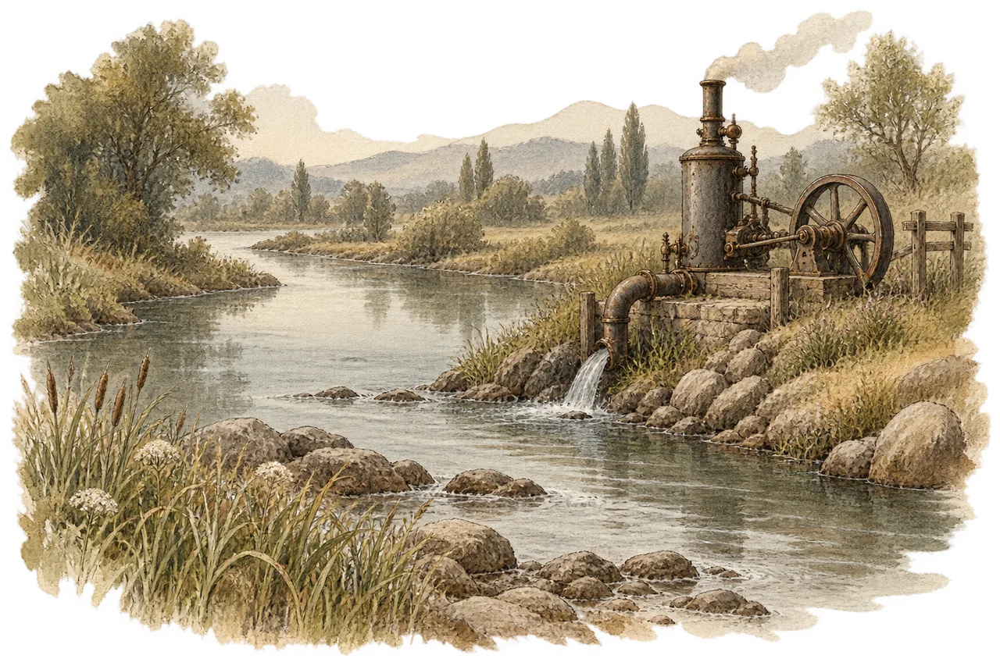
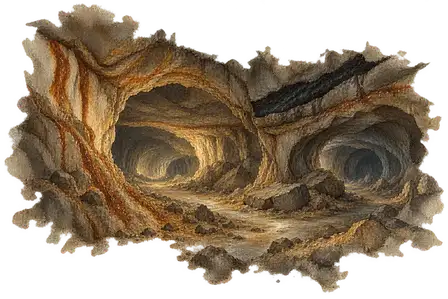
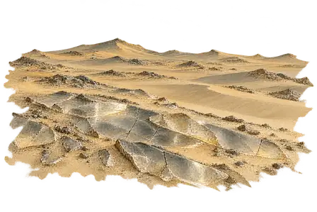
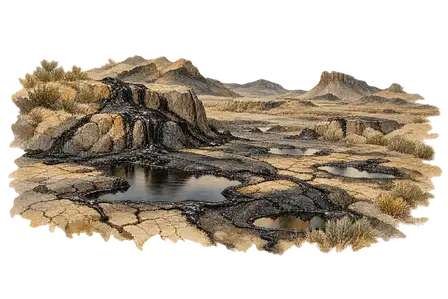
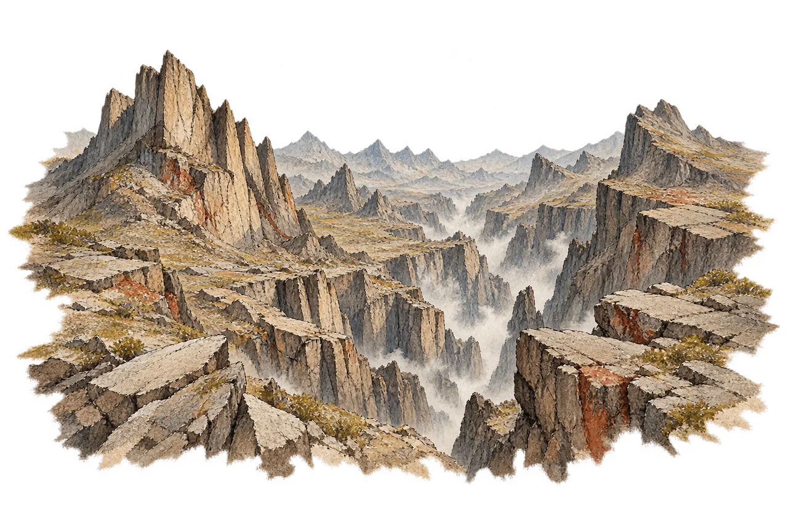
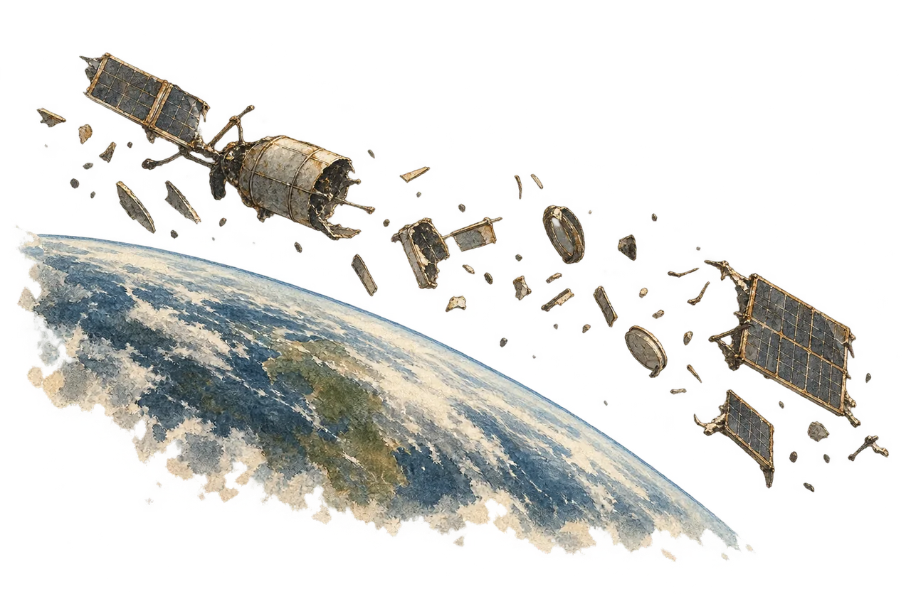
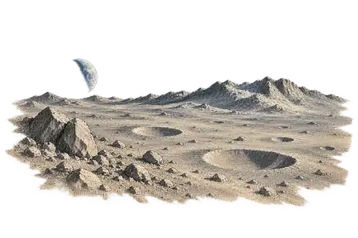
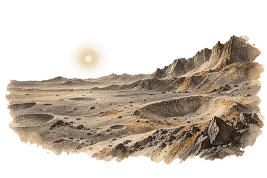
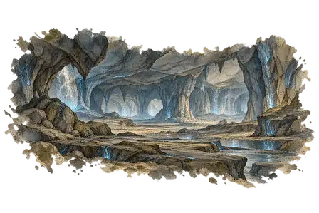

La Lisière
Référence validée
La Plaine des Hautes Herbes
Nouveau paysage · PNG maître
La Rivière Lente
Nouveau paysage · PNG maître
La Rivière Lente · à partir de la Vapeur
Référence validée
Les Collines Vertes
Nouveau paysage · PNG maître
Les Profondeurs
Nouveau paysage · PNG maître
Le Désert de Verre
Nouveau paysage · PNG maître
Le Gisement Noir
Nouveau paysage · PNG maître
Les Pics Fracturés
Nouveau paysage · PNG maître
L’Orbite Basse
Nouveau paysage · PNG maître
La Lune
Nouveau paysage · PNG maître
Mercure
Référence validée